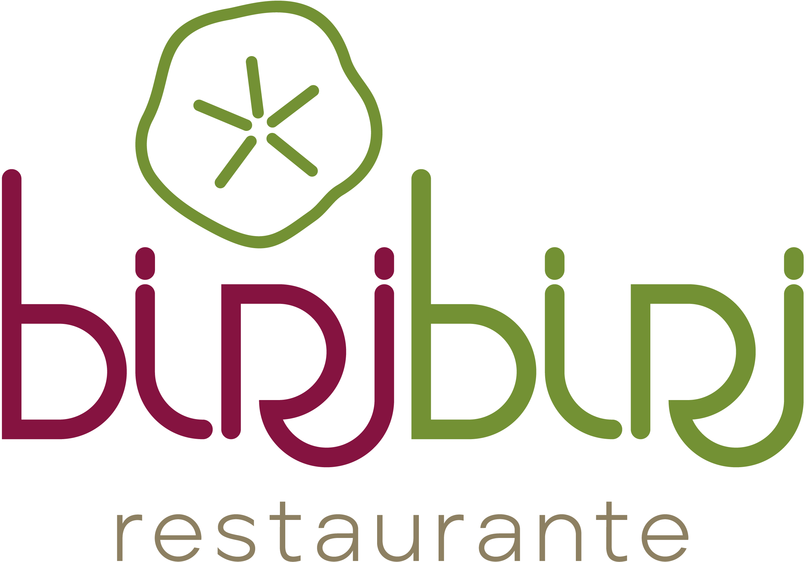

entrada
sobre
horta
menu
contato
Visite nossa pousada 🏘️:
Reservas por aqui
Deixe seu feedback 📲:
Nos avalie pelo TripAdvisor
Nos avalie pelo Google
Redes sociais 🔗:
Nos marque no Instagram
Chama a gente no WhatsApp
Estamos aqui 📌: